1020D30 oil seal cover, fly wheel side - r + r and replace seals
- Path
- Procedures > 10 ENGINE > 1020 CRANKCASE SUMP AND COVERS > 1020D OIL SEALS ON CRANKSHAFT > 1020D30 oil seal cover, fly wheel side - r + r and replace seals
- Kind
- repair procedure (removal / refitting; the operation number is the code)
- Applies to
- all engines; all production periods
- Interactive page
- https://sloeber94.github.io/elrnDB-fDbl/en/#/2584179
Applies to: all engines; all production periods
 Removing
Removing
 Refitting
RefittingUndo the plug on the sump and drain the engine oil into a suitable container.
Tighten the engine oil plug to the recommended torque.
 | Fastening | Component | Ø | Value (daNm) |
|---|---|---|---|---|
- | Plug | ENGINE OIL DRAIN PLUG | - | 5 |
1. Undo engine block retaining bolts and oil pump barrel retaining bolts (1b)
2. Use the tool to cut the strip of silicon sealannt between sump and engine block.
 | Name | Country |
|---|---|---|
2 | Blade | 1.870.718.000 |
Lower the engine oil sump.
3. Undo bolts (3a) securing the engine oil intake, then remove the oil sump.
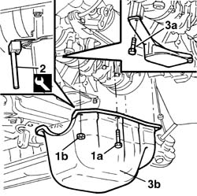
Applies to: all engines; all production periods
Removing
Refitting1020A20 crank case oil sump - r + r clean seals for sealant application .
1. Undo the bolts (1a) and remove the oil cover, flywheel side (1b), complete with gasket.
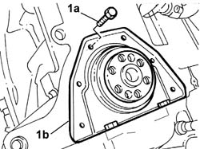
Applies to: all engines; all production periods
Removing
RefittingPosition a suitable container for collecting the engine oil.
1. Undo the plug and drain the engine oil into the container positioned previously.
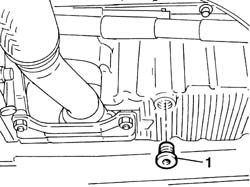
Applies to: all engines; all production periods
Removing
Refitting1. Using a hydraulic hoist fitted with suitable chains support the power unit safely.
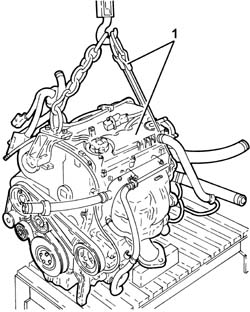
Applies to: all engines; all production periods
1. Undo retaining bolts (1a) and remove oil cover (1b)
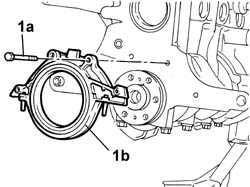
Applies to: all engines; all production periods
Refitting
Removing1. Place the cover, complete with oil gasket (1a), in its housing using the tool (1b).
| Name | Country |
|---|---|---|
1b | Fitting tool | 1.860.088.000 |
2. Position the bolts fixing the flywheel side oil seal cover to the crankcase without tightening them.
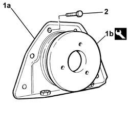
Applies to: all engines; all production periods
1. Unscrew the retaining bolts
2. Remove the engine flywheel guard.
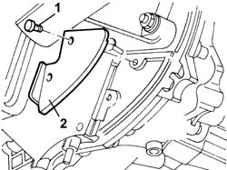
Applies to: all engines; all production periods
1. Undo the bolt (1a) and the nut (1b) and remove the engine oil dipstick tube (1c).
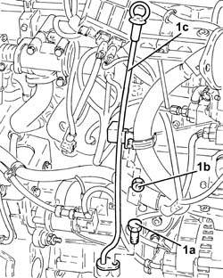
Applies to: all engines; all production periods
With the oil cover on the bench, remove the sealing ring.
Applies to: all engines; all production periods
1020A20 crank case oil sump - r + r clean seals for sealant application .
Tighten the bolts fixing the flywheel side oil seal cover to the recommended torque.
| Fastening | Component | Ø | Value (daNm) |
|---|---|---|---|---|
- | Bolt | FLYWHEEL SIDE COVER | M6 | 0.9 |
Applies to: all engines; all production periods
1. Position a hydraulic jack under the engine oil sump.
2. Unscrew the bolts securing the oil sump to the gearbox - differential unit.
3. Remove the plugs in the flywheel shield and, using tools (3a) and (3b), undo the front and rear bolts (3c) and the side bolts (3d) fixing the oil sump to the crankcase.
3. Use the tool to cut the strip of silicone sealant between the sump and engine block.
4. Remove the engine oil sump.
| Name | Country |
|---|---|---|
3a | Key | 1.860.834.000 |
| Name | Country |
|---|---|---|
3b | Key | 1.860.833.000 |
| Name | Country |
|---|---|---|
4 | Blade | 1.870.718.000 |
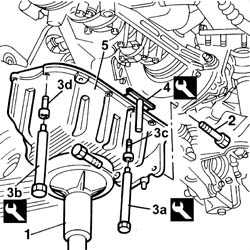
Applies to: all engines; all production periods
Raise the power unit, as necessary, using the hydraulic hoist.
1. Undo the engine oil drain plug and drain the oil.
2. Undo the bolts fixing the crankcase sump.
3. Cut the crankcase sump sealant using the tool.
| Name | Country |
|---|---|---|
3 | Blade | 1.870.718.000 |
4. Remove the crankcase sump.
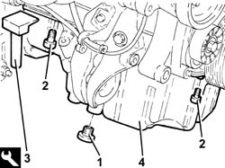
Applies to: all engines; all production periods
Refitting
RemovingLubricate the new oil cover seal with oil
1. Tighten the crank case cover securing bolts
2. Use tools (2a) and (2b) to insert the new oil sealing ring.
| Name | Country |
|---|---|---|
2a | Fitting tool | 1.860.881.000 |
| Name | Country |
|---|---|---|
2b | Grip | 1.860.879.000 |
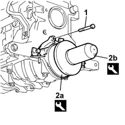
Applies to: all engines; all production periods
1. Undo the bolts (1a) and remove the oil sealling cover (1b).
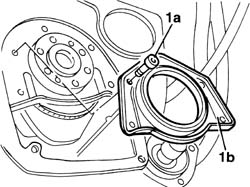
Applies to: all engines; all production periods
1. Undo the bolts (1a) and remove the oil cover, flywheel side (1b).
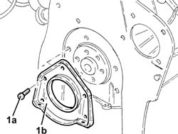
Applies to: all engines; all production periods
Tighten the bolts securing the rear crankshaft cover to torque.
| Fastening | Component | Ø | Value (daNm) |
|---|---|---|---|---|
- | Bolt | FLYWHEEL SIDE COVER | M6 | (Crankcase) 1 |
Clean the oil sump and crankcase surfaces thoroughly to remove all traces of sealant.
Apply silicone sealant around the perimeter of the engine oil sump.
 | Type | Component | Name | Qty. |
|---|---|---|---|---|
- | Silicon sealant | OIL SUMP | Arexon RHODORSIL 5552 | - |
Position the engine block sump, tighten the engine oil intake retaining bolts and secure the oil sump using the retaining bolts and nuts.
| Fastening | Component | Ø | Value (daNm) |
|---|---|---|---|---|
- | Bolt | OIL SUMP | M6 | (Cylinder block/crankcase) 1 |
| Fastening | Component | Ø | Value (daNm) |
|---|---|---|---|---|
- | Nut | OIL SUMP | M6 | (Covers) 0.7 |
Applies to: all engines; all production periods
Refitting
Removing1. Fit cover (1a) using installing tool (1b).
| Name | Country |
|---|---|---|
1a | Fitting tool | 1.860.817.000 |
2. Tighten the crankcase fixing bolts to torque.
| Fastening | Component | Ø | Value (daNm) |
|---|---|---|---|---|
2 | Bolt | FLYWHEEL SIDE COVER | M6 | (Crankcase) 0.9 |
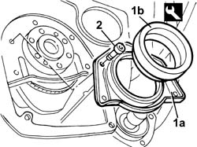
Applies to: all engines; all production periods
Refitting
RemovingClean any residues of sealant from the contact surfaces of the crankcase sump and the crankcase/crankshaft rear cover.
1. Refit the flywheel side oil seal (1a) in its seating and tighten the bolts (1b) to the specified torque.
| Fastening | Component | Ø | Value (daNm) |
|---|---|---|---|---|
1b | Bolt | ENGINE OIL DRAIN PLUG | M6 | (Engine crankcase side) 0.8 ÷ 1.1 |
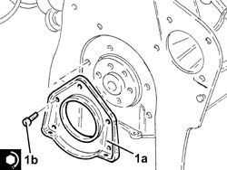
Applies to: all engines; all production periods
Apply a suitable sealant to the oil sump.
| Type | Component | Name | Qty. |
|---|---|---|---|---|
- | Silicon sealant | OIL SUMP | Arexon RHODORSIL 5552 | - |
Place the engine block sump in its seat.
Tighten the front and rear fixing bolts to torque using a suitable spanner.
| Name | Country |
|---|---|---|
- | Key | 1.860.834.000 |
| Fastening | Component | Ø | Value (daNm) |
|---|---|---|---|---|
- | Bolt | OIL SUMP | M8 | (crankcase) 2.5 |
Tighten the side fixing bolts to torque using a suitable spanner.
| Name | Country |
|---|---|---|
- | Key | 1.860.833.000 |
| Fastening | Component | Ø | Value (daNm) |
|---|---|---|---|---|
- | Bolt | OIL SUMP | M6 | (crankcase) 0.9 |
Tighten the bolts fixing the sump to the gearbox-differential to torque.
Tighten the bolts fixing the sump to the gearbox-differential to torque.
| Fastening | Component | Ø | Value (daNm) |
|---|---|---|---|---|
- | Bolt | MANUAL GEARBOX | M10 x 1.25 | (Join with oil sump) 5.5 |
Fit the sump side fixing plugs on the gearbox.
Fit the engine flywheel protection.
Tighten the lower bolt fixing the oil dipstick pipe.
Tighten the engine oil sump plug to torque.
| Fastening | Component | Ø | Value (daNm) |
|---|---|---|---|---|
- | Plug | ENGINE OIL DRAIN PLUG | M18 x 1.5 | 2 |
Applies to: all engines; all production periods
Apply silicone sealant around the edge of the crankcase sump.
1. Place the crankcase sump (1a) back in its housing and secure it tightening the bolts (1b) to the recommended torque.
| Fastening | Component | Ø | Value (daNm) |
|---|---|---|---|---|
1b | Bolt | OIL SUMP | M6 | (Engine crankcase side/flywheel side oil seal cover) 0.8 ÷ 1.1 |
| Fastening | Component | Ø | Value (daNm) |
|---|---|---|---|---|
1b | Bolt | OIL SUMP | M8 | (Engine crankcase side/flywheel side oil seal cover) 2.3 ÷ 2.8 |
2. Place the engine oil drain plug, complete with a new seal, back in its housing and tighten it to the recommended torque.
| Fastening | Component | Ø | Value (daNm) |
|---|---|---|---|---|
2 | - | ENGINE OIL DRAIN PLUG | M18 | (Crankcase sump side) 1.8 ÷ 2.2 |
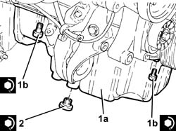
Applies to: all engines; all production periods
Lower the engine at the workbench using the hydraulic hoist.
Place the complete engine oil dipstick tube back in its housing and fix it using the nut and the bolt.
Topics linked from this page (2)
- 0010T11 engine oil check level and top up
- 1020A20 crank case oil sump - r + r clean seals for sealant application